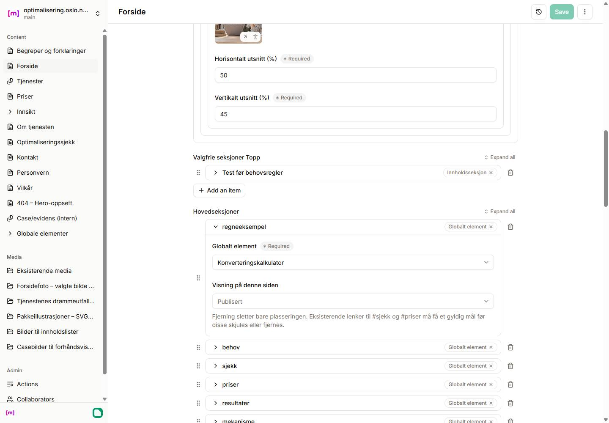

H024A8F: ryddigere CMS og valg av kortere forside
Kun den gjentatte hjelpeteksten er endret i CMS. Nettsiden, OWNER-rekkefølgen og alle originaler er bevart. Ingen av forsideforslagene nedenfor er implementert.
Leveranserapport · Native etikettbegrensning · Eksakte handlinger og avveininger · Uendret review-side
Faktisk hosted Pages CMS — før og etter
Ni lange gjentakelser er borte. Rå-ID-ene er fortsatt native radnavn; norske select-etiketter kan ikke avledes av denne listesammendragstypen uten en ekstra, potensielt utdatert navnekopi. Ingen slik kopi er innført.
Forklaringen om original og plassering er fortsatt tilgjengelig
Åpne raden for norsk valg og sikkerhetstekst. Globale elementer forklarer at originalendringer gjelder dens plasseringer.

Forside — to forslag til OWNER, ikke en etter-visning
Knappene viser kun forslagets rekkefølge og et geometrisk overslag. De lagrer eller publiserer ingenting.
A — anbefalt kompakt kjøpsvei
Dagens faktiske side
Forslaget, beregnet
Beregnet reduksjon
Skjul OWNERs lokale forbehovsvelger-rad og behold dataene. Fjern bare de utelatte globale plasseringene fra siden; alle originale mastere beholdes. H1, Hero, CTA-tekst og /#sjekk / /#priser endres ikke.
Estimatet trekker målte, nåværende seksjonshøyder fra dagens total. Det er ingen ferdig reflow-test eller påstand om konverteringsgevinst. Eventuell senere implementering krever eget OWNER-valg og verifisering.
STOP for OWNER: vurder editor-lesbarhet/native etikettbegrensning og velg et eksakt sett/rekkefølge. H024A3 OPEN, H024B BLOCKED, H022 PARKED. Noindex og deaktivert innsending beholdes.